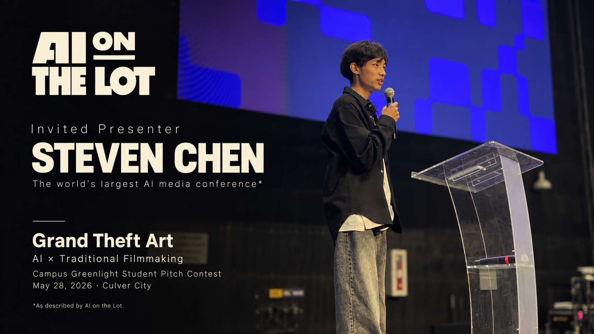
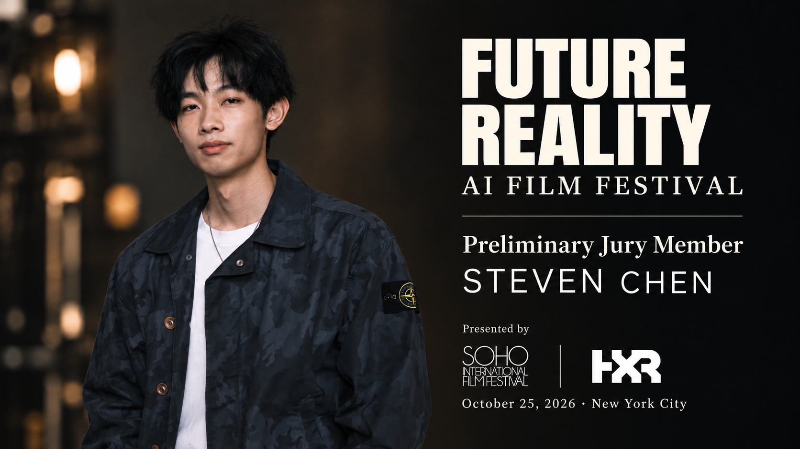
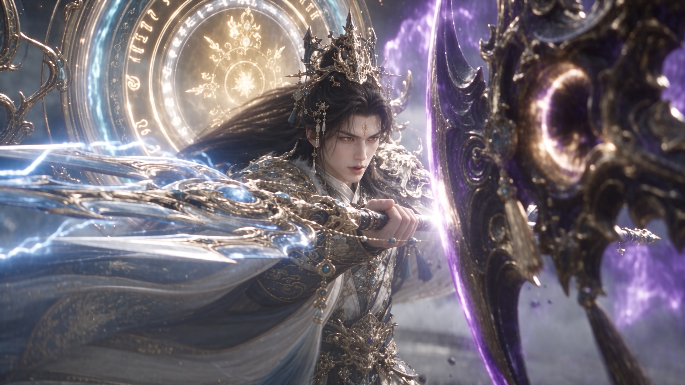
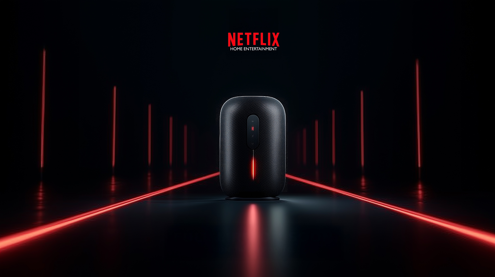
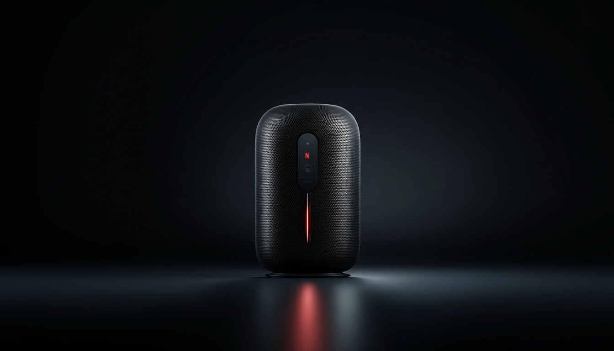
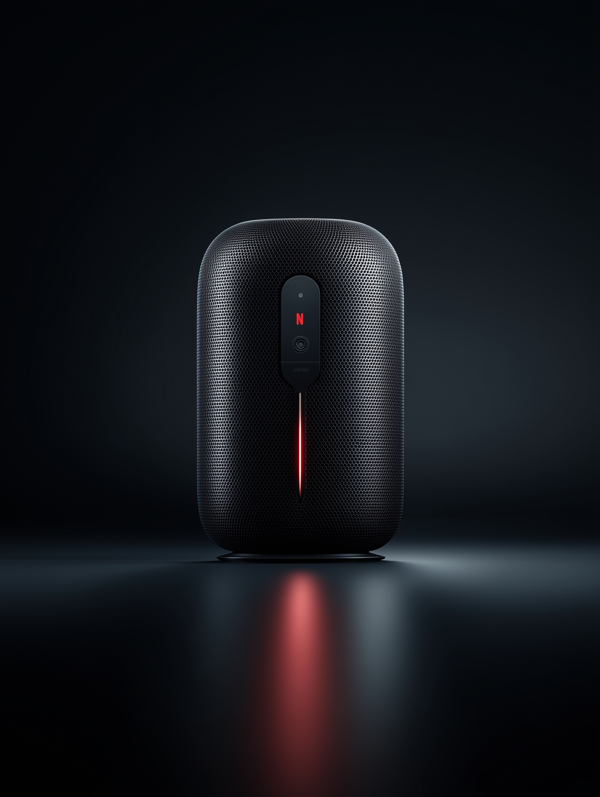
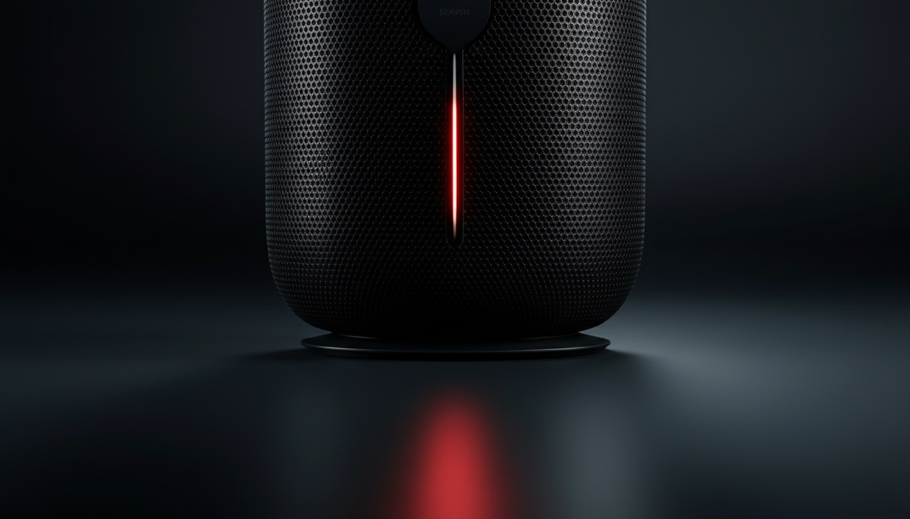
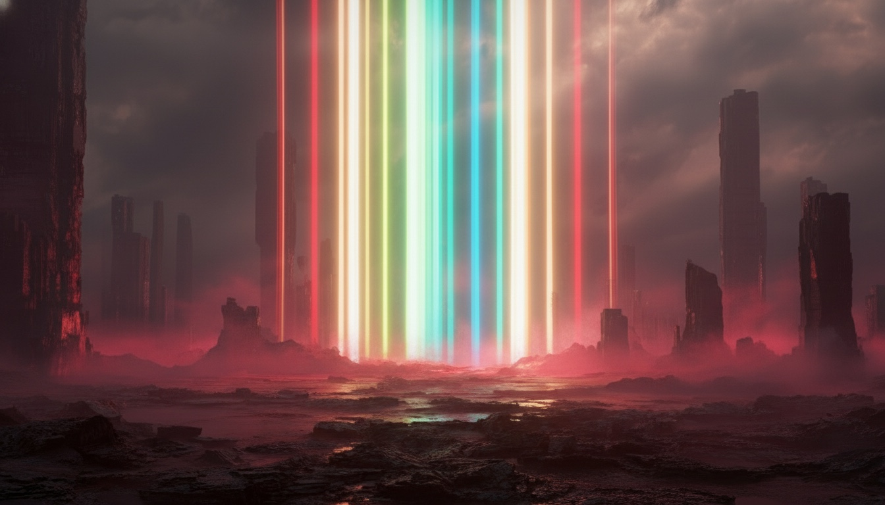

AI on the Lot
Invited Presenter · Grand Theft Art
Selected AI work / 2025—2026
Steven Chen builds visual worlds across generative image, AI filmmaking, brand storytelling, and interactive experiments. The work starts with cinema: light, rhythm, character, and a reason for every frame.
Swipe to explore all four partnerships · Tap image to view full size

Invited Presenter · Grand Theft Art

Preliminary Jury Member · SOHO × HXR

AI Film & Narrative / 影视级AI剧集
Original AI xianxia — direction, worldbuilding, visual development and generative filmmaking, carried through to editing and sound.
AI Video / Workflow Study
A compact look inside an image-to-video workflow: prompt, visual exploration, motion refinement, and the final cinematic shot.

What if Netflix didn’t just show stories, but let you feel them? An AI concept advertisement for an imagined speaker — not simply playing sound, but revealing its essence.
如果 Netflix 不仅呈现故事，而是让你感受它们？一款扬声器，不为播放声音而生，只为揭示声音的本质。感受每个故事。




一辆孤零零的Cybertruck穿越深空，被送至火星表面，从着陆舱中驶出，置身于这个陌生世界红色的尘埃与刺眼的光芒之中。影片记录了它穿越沙尘暴、工业废墟和未来殖民地的静谧而富有电影感的旅程——将一场新车发布活动升华为一场史诗般的星际奥德赛。


Creative practice